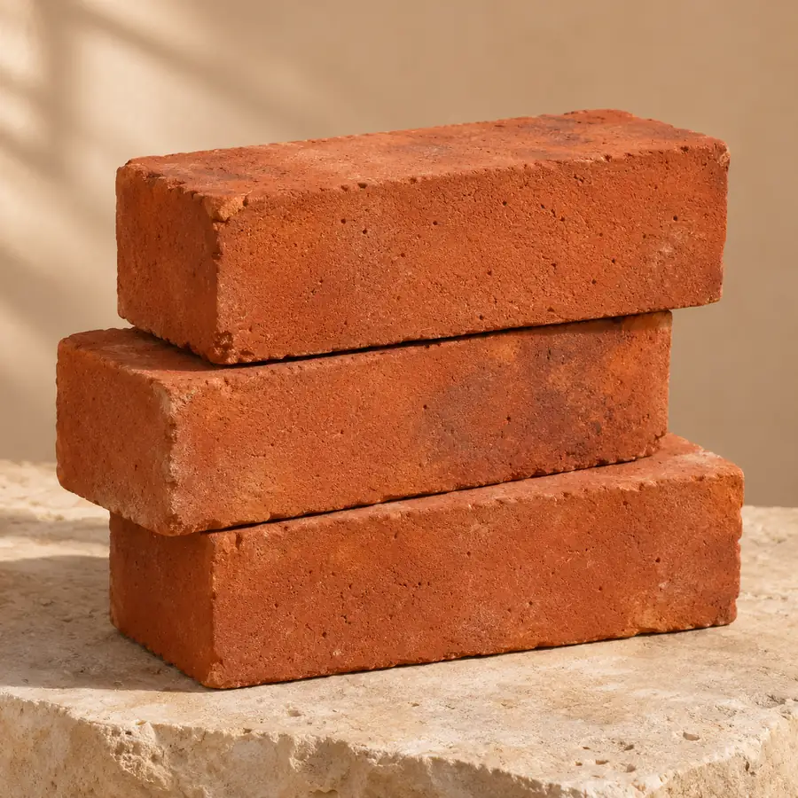
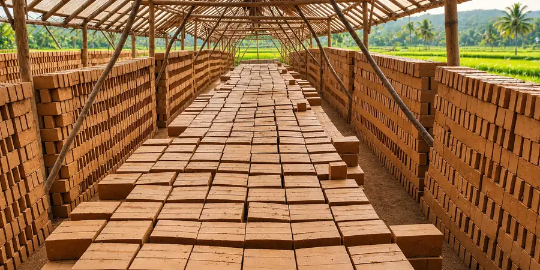
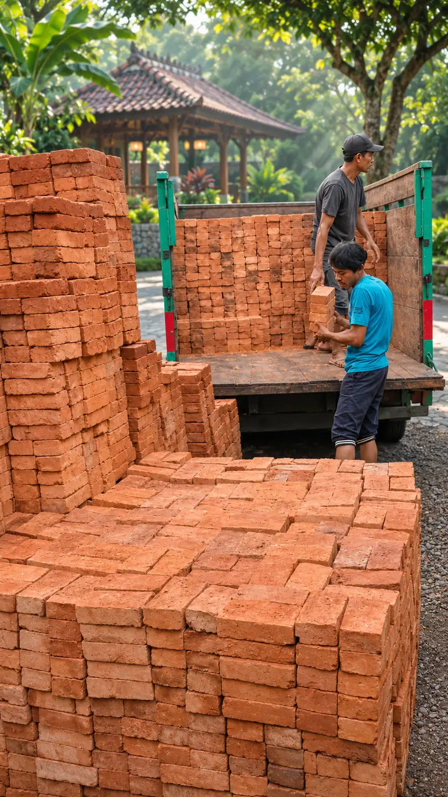

Panduan bata merah
Semua yang perlu Anda ketahui sebelum membeli bata merah untuk proyek di Bogor dan Jadetabek: harga, biaya per m², cara menghitung kebutuhan, dan pilihan material.

Harga Bata Merah Bogor
Harga bata merah Bogor 2026 mulai Rp750–850 per pcs, Jadetabek Rp850–1.000. Lengkap dengan harga per 1.000, minimal…

Biaya Bata Merah per m²
Biaya bata merah per m² dinding mulai Rp48.750 (Bogor) dan Rp55.250 (Jadetabek). Lengkap dengan tabel biaya dinding…

Cara Menghitung Kebutuhan Bata
Cara mudah menghitung kebutuhan bata merah per m²: luas dinding bersih × 65 pcs + cadangan 5%. Lengkap dengan contoh…

Bata Merah Press
Bata merah press dicetak mesin press modern: lebih padat, ukuran seragam, permukaan rapi. Kenali kelebihannya dan cara…

Bata Merah vs Hebel
Perbandingan bata merah dan bata ringan (hebel): bahan, ukuran, kebutuhan per m², perekat, berat, dan pengerjaan.…

Bata Merah Jadetabek
Jual bata merah press untuk Jakarta, Depok, Tangerang, dan Bekasi. Harga Rp850–1.000 per pcs, minimal order 6.000 pcs,…

Bata Merah Cibinong
Jual bata merah press untuk Cibinong (Kabupaten Bogor). Harga Rp750–850 per pcs, minimal order 6.000 pcs, dikirim ke…
Bata Merah Depok
Jual bata merah press untuk Depok (Kota Depok). Harga Rp850–1.000 per pcs, minimal order 6.000 pcs, dikirim ke lokasi…
Bata Merah Bekasi
Jual bata merah press untuk Bekasi (Kota & Kabupaten Bekasi). Harga Rp850–1.000 per pcs, minimal order 6.000 pcs,…